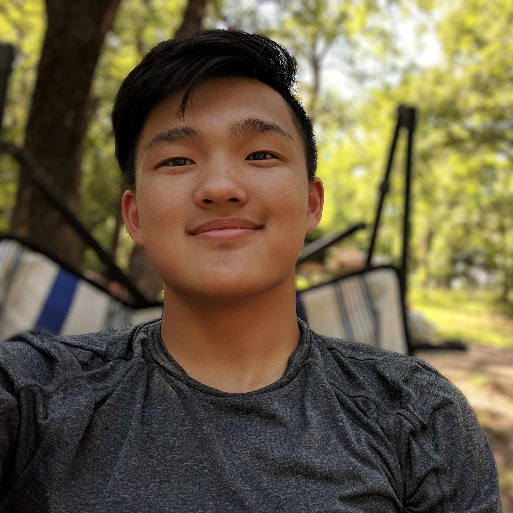
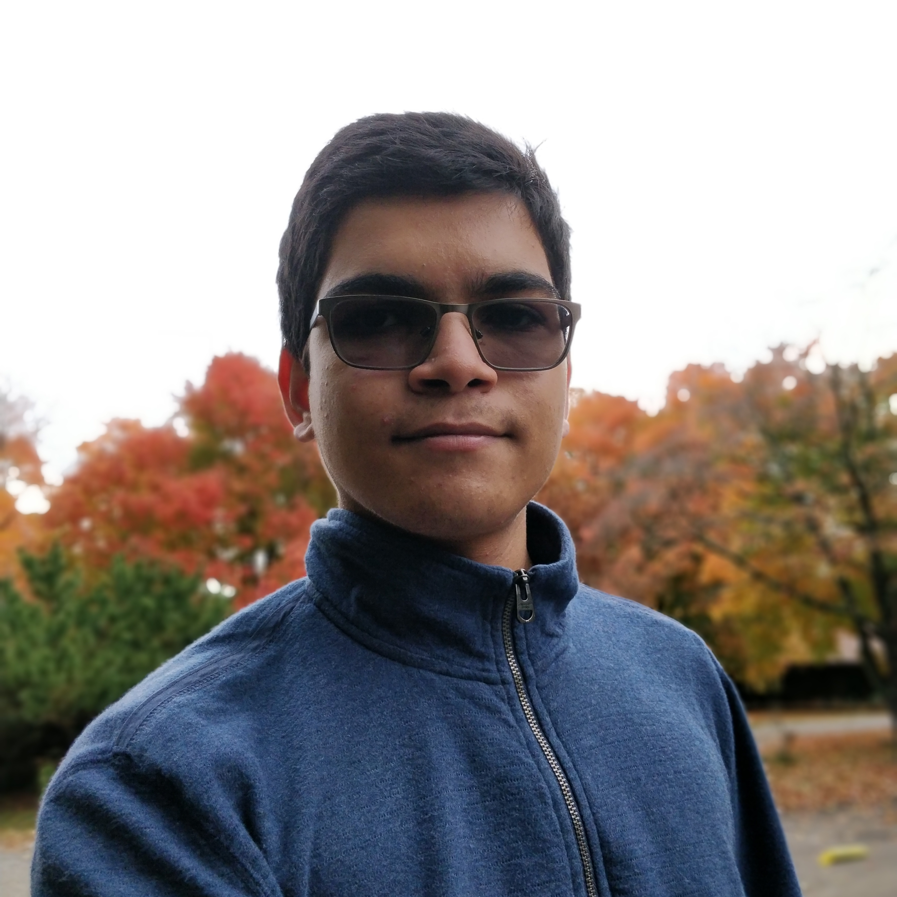

Development
Development for the Epiphany Web and Mobile application began at HackUTD
2019, with a group of 4 computer science majors at 3 universities. When
we discovered how applicable the idea was to not only the challenges
at the competition, but the skills we were all interested in learning,
we knew we had to give it a shot.
-
Ansh Jain
Ansh is a first-year Turing Scholar and math major in UT's College of Natural Sciences. He started the creation of the Epiphany web application and has been working on it since the founding of the organization.
-

-
Justin Liu
Justin is a first-year computer science major at the University of Texas at Dallas. He was primarily responsible for framework research and design for the start of the Epiphany web application.
- 
-
Piyush Mewada
Piyush is a first-year computer science major in the honors program at the University of Texas at Dallas. He is currently studying computer architecture and has an interest in web application development.
- 
-
Shraavan Divakarla
Shraavan is a high-school student who attended HackUTD with the three people mentioned above. He has an interest in web and mobile application development and is still exploring where he wants to go for his collegiate years.